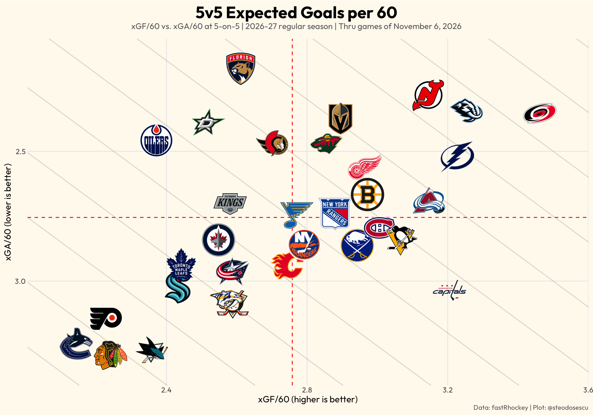
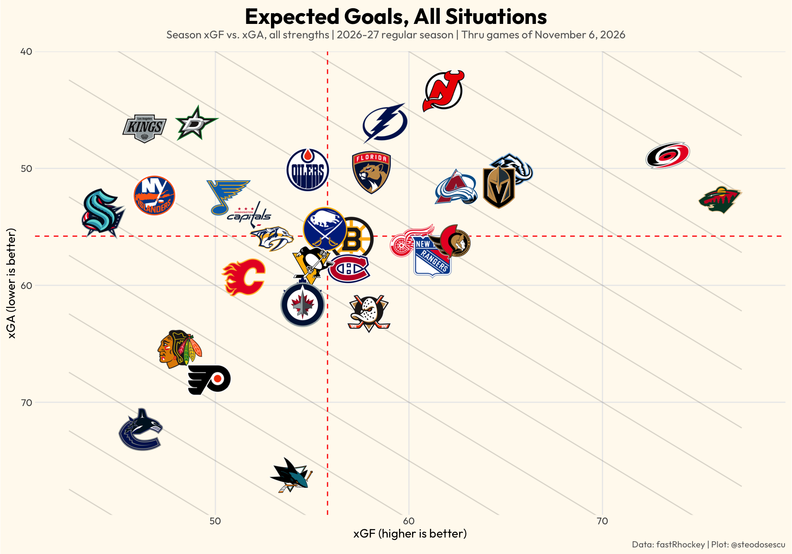
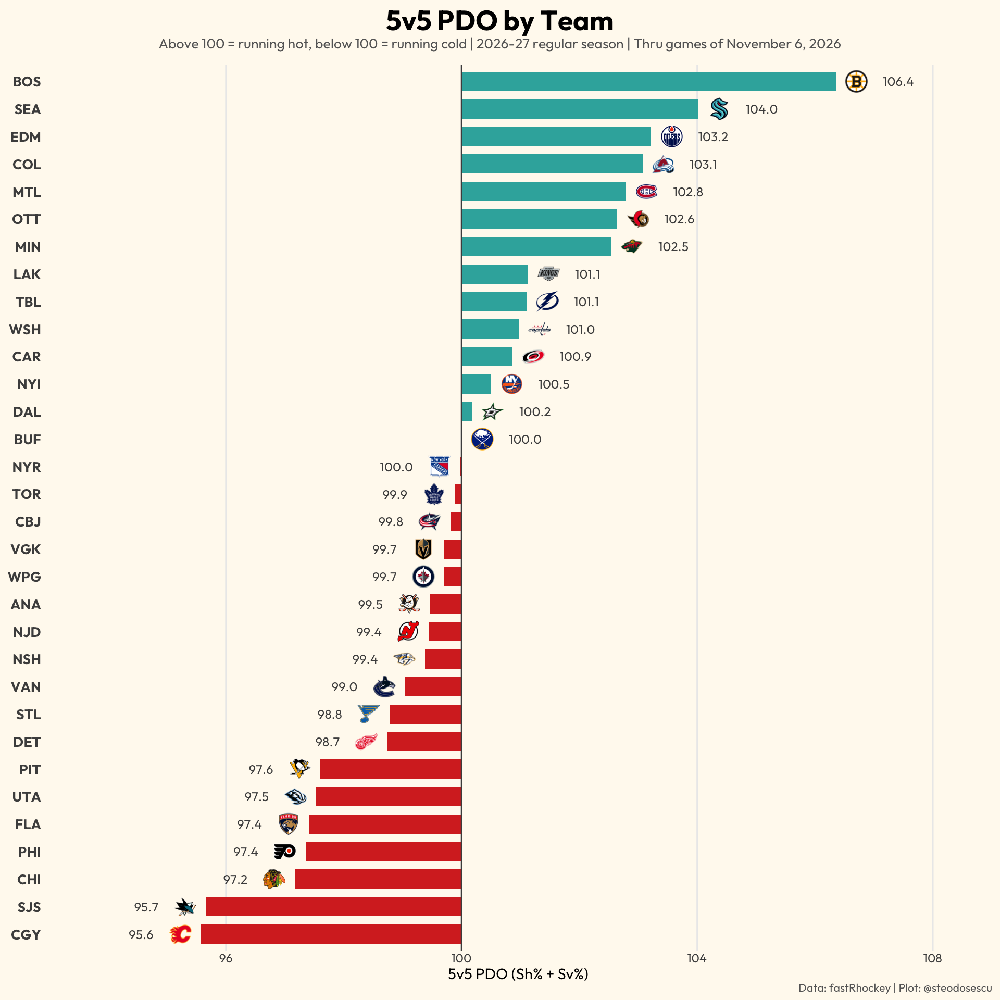
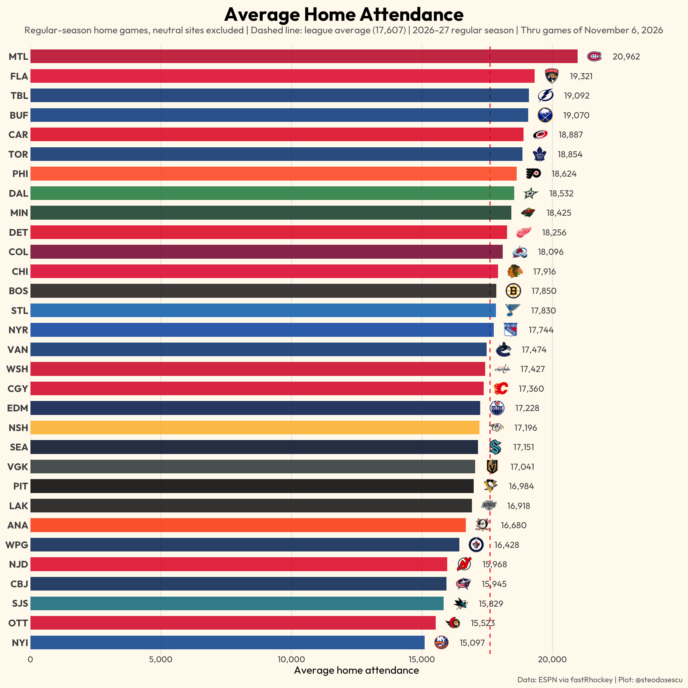

Team-level advanced stats for the 2026-27 NHL season, through 264 regular-season games. Shot and expected-goal data come from NHL play-by-play via fastRhockey, whose xG model scores every unblocked shot attempt.
Expected goals (xG) weight every unblocked shot by its probability of scoring, based on factors such as distance, angle and shot type. xGF is the quality of chances a team creates and xGA what it allows. Teams in the top-right quadrant create more than the league average and allow less. The diagonal lines mark equal expected-goal differential.


PDO is 5-on-5 shooting percentage plus save percentage (on shots on goal), times 100. The league as a whole sums to 100, and team PDO tends to regress toward it over a season, so a team far above 100 has probably been getting the bounces, and one far below has been unlucky.

Average attendance at each team’s regular-season home games, as reported by ESPN. Neutral-site games, such as the Global Series, are excluded.

Copyright © 2026 Stephan Teodosescu